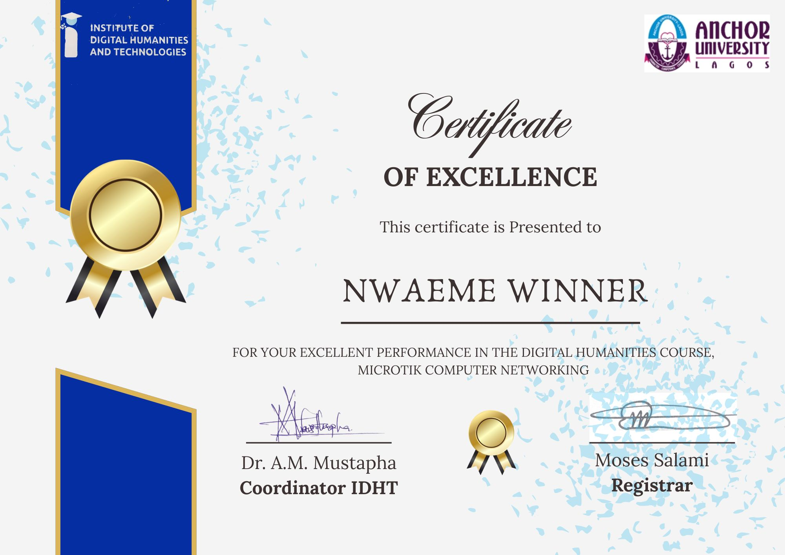

Student Platform
NACOS Anchor University Platform
Contributed to the frontend of the NACOS student dashboard, helping improve layout structure, responsiveness, and interface styling for student use.
Computer Science Student | Frontend Builder
I create responsive interfaces and contribute to digital platforms that make student experiences simpler and clearer.
I am a Computer Science student at Anchor University, Lagos, with hands-on experience in frontend web development, networking fundamentals, and collaborative project work. I enjoy turning ideas into practical web interfaces that are clean, accessible, and easy to use.
About Me
My work sits at the intersection of web development, teamwork, and practical problem solving. I have contributed to university digital platforms, including a student dashboard and a library management interface, where I focused on layout structure, responsive styling, and usability.
Alongside development, I also have experience in sales and customer support, which helped me build strong communication, adaptability, and people skills that carry into team projects.
Skills
Projects
Student Platform
Contributed to the frontend of the NACOS student dashboard, helping improve layout structure, responsiveness, and interface styling for student use.
Library System
Worked on the frontend interface for a library management system, building a clean and responsive experience for students and staff using HTML and CSS.
Experience
Supported customers, handled product inquiries, and maintained records as a Sales Representative, strengthening my communication and real-world problem-solving skills.
Certifications
Completed
I received a Certificate of Excellence from the Institute of Digital Humanities and Technologies in partnership with Anchor University for excellent performance in the Digital Humanities course, with a focus on Mikrotik Computer Networking.
This reflects strong performance in the Digital Humanities course and practical networking training.

In Progress
I am currently working toward the Mikrotik Certification Examination as part of my continued growth in networking and network configuration.
Contact
If you would like to collaborate, discuss an opportunity, or see more of my work, feel free to reach out.